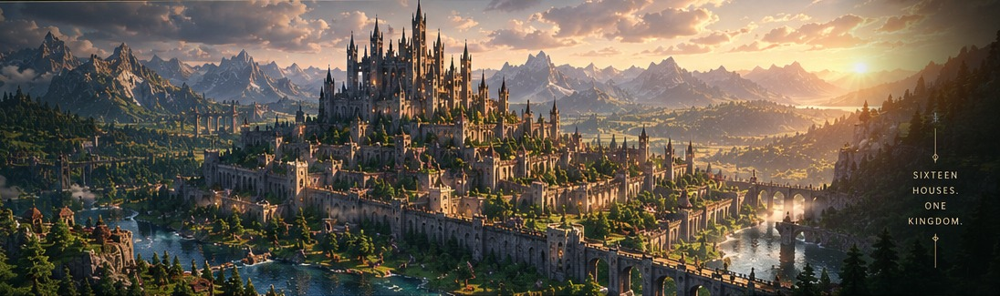
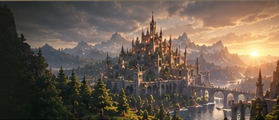
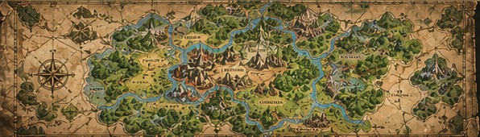
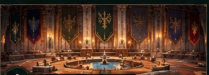
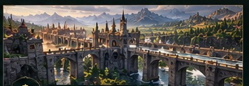

NAME CONCEPT · UNCONFIRMED
House Warden
Ancient stone, deep forests and a formidable mountain stronghold.

BUILD · EXPLORE · CREATE · TOGETHER
A HORIZONCRAFT CIVILISATION PROJECT
A fresh start in a new world. The Southern Territories is a long-term Minecraft civilisation built on community, creativity and ambition. We're looking for founding members to help shape a living, breathing world—with your ideas, your skills and your vision.
Join the Founding Expedition →
Our goals, values and what makes this project different.
LEARN MORE →
World layout, territories, natural borders and key locations.
EXPLORE THE MAP →
Independent houses, shared decisions and a common future.
HOW WE GOVERN →
Shared farms, storage, roads, bridges and major works.
SEE THE PLAN →01 / OUR VISION
This isn't just another Minecraft world. It's a community-driven civilisation with long-term goals, deep roleplay, creative freedom and real opportunities to leave your mark.
HorizonCraft already has established bases, impressive builds and farms for almost everything. This project is about stepping away from that comfort and creating something new from the ground up—while initially keeping access to existing resources that help us get started.
02 / THE MASTERPLAN
The Southern Territories will be home to a central capital and multiple house territories, each with its own identity, resources and purpose. Connected by roads, rivers and trade routes, the civilisation will grow through cooperation, exploration and shared ambition.
The map is conceptual only. Names, borders, coordinates and final geography have not been agreed.
03 / THE GREAT HOUSES
Each house will have its own territory, style, resources and story. From mountain fortresses to coastal strongholds, every house will bring something unique to the Southern Territories.
Ancient stone, deep forests and a formidable mountain stronghold.
Dark masonry, stark silhouettes and a fortress built to command the skyline.
Gothic towers, mysterious halls and a distinctive dark palette.
Future members can join existing houses rather than dividing the map into endless new territories.
House names and heraldry are examples only. Founding members can help decide the final identities, histories and architectural themes.
04 / GOVERNANCE & ROLEPLAY
A democratic council brings the houses together without placing one supreme ruler above everyone else.
House leaders meet in the capital to debate proposals, settle disputes and decide the future of shared projects. The council chamber should be a monumental landmark as well as a practical place to meet.
THE GUIDING PRINCIPLE
Every house has a voice. The details of how that voice is exercised remain open for the founding group to agree.
05 / SHARED INFRASTRUCTURE
The realm should be more than impressive castles. Shared systems will help every house thrive and keep the project sustainable.
A connected network of roads and bridges, with gates and landmarks at territory borders. Neighbouring lands should feel connected—not separated by huge empty buffer zones.
A huge, organised bulk-storage facility where houses can deposit and withdraw building materials. Inspired by HorizonCraft spawn's public storage, but on a much greater scale.
Coordinated farms to support a self-sufficient civilisation. Technical farms can sit offshore or out of sight where practical, preserving the medieval landscape.
06 / DEVELOPMENT ROADMAP
A suggested sequence to give the project momentum without locking every detail before the founding members arrive.
Share the proposal, invite up to eight initial members and agree the guiding principles.
OUTCOME: FOUNDING GROUPCompare the 500,000 and 1,000,000 block options, assess terrain and biomes, then map the connected territories.
OUTCOME: AGREED LOCATION & MAPConfirm house identities, assign territory boundaries, select castle sites and agree initial council rules.
OUTCOME: TERRITORIES & BUILD PLANSBegin the capital, council chamber, main roads, Grand Repository and priority communal farms.
OUTCOME: SHARED INFRASTRUCTUREDevelop castles and settlements, introduce roleplay, and welcome future members into established houses.
OUTCOME: A LIVING, GROWING REALMTHE JOURNEY BEGINS
We're looking for founding members to help shape the Southern Territories from the ground up. Whether you're a builder, redstone specialist, designer, explorer or simply someone with a big vision—we want to hear from you.
Explore the Proposal →A project Discord invitation can be added here once the founding group has agreed where to gather.